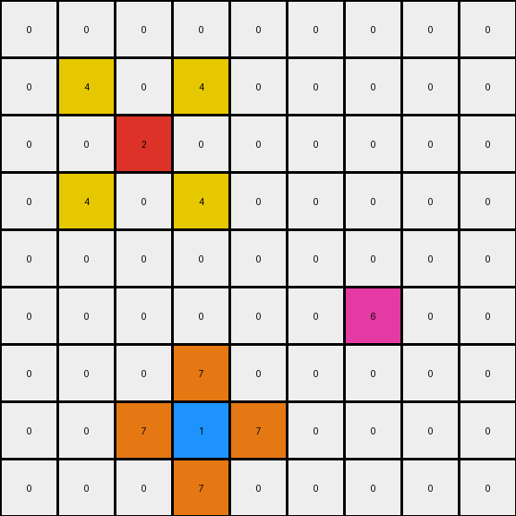

004 • History
- puzzle_id:
2-0ca9ddb6
- description:
example_summary
- timestamp:
24.357.081407
- call_count:
4
Begin puzzle: 2-0ca9ddb6
example_1
input
[[0 0 0 0 0 0 0 0 0]
[0 0 0 0 0 0 0 0 0]
[0 0 0 0 0 0 0 0 0]
[0 0 2 0 0 0 0 0 0]
[0 0 0 0 0 0 0 0 0]
[0 0 0 0 0 0 0 0 0]
[0 0 0 0 0 0 1 0 0]
[0 0 0 0 0 0 0 0 0]
[0 0 0 0 0 0 0 0 0]]
output
[[0 0 0 0 0 0 0 0 0]
[0 0 0 0 0 0 0 0 0]
[0 4 0 4 0 0 0 0 0]
[0 0 2 0 0 0 0 0 0]
[0 4 0 4 0 0 0 0 0]
[0 0 0 0 0 0 7 0 0]
[0 0 0 0 0 7 1 7 0]
[0 0 0 0 0 0 7 0 0]
[0 0 0 0 0 0 0 0 0]]
images


observations
The user wants me to analyze an input-output pair of grids from an ARC task and derive a natural language program that describes the transformation from input to output.
I need to:
Describe the input and output grids.
Use code to analyze the grids, focusing on color counts, changed pixels, and object properties.
Formulate a hypothesis about the transformation rule.
Express the transformation rule as a natural language program.
Example 1 Analysis:
Input grid: 9x9, mostly white (0) with a single red (2) pixel and a single blue (1) pixel. Output grid: 9x9, the red pixel remains, the blue pixel remains, and new yellow (4) and orange (7) pixels have appeared around them.
Let’s analyze the changes:
The red pixel at (3, 2) remains at (3, 2).
The blue pixel at (6, 6) remains at (6, 6).
Yellow pixels appear at (2, 1), (2, 3), (4, 1), (4, 3). These are adjacent (horizontally and vertically) to the red pixel.
Orange pixels appear at (5, 6), (6, 5), (6, 7), (7, 6). These are adjacent (horizontally and vertically) to the blue pixel.
It seems like the transformation involves identifying non-white pixels and adding adjacent pixels of specific colors based on the original color.
Okay, I will analyze the provided input and output grids for example_1.
The input grid is a 9x9 grid that is mostly white. There is a single red pixel and a single blue pixel. The red pixel is located in the fourth row, third column (using 0-based indexing, so at coordinates (3, 2)). The blue pixel is located in the seventh row, seventh column (at coordinates (6, 6)).
The output grid is also a 9x9 grid. The red and blue pixels remain in their original positions. New pixels of yellow and orange have appeared around the red and blue pixels respectively. Around the red pixel, yellow pixels have appeared in the cells directly adjacent (horizontally and vertically). Around the blue pixel, orange pixels have appeared in the cells directly adjacent (horizontally and vertically).
import numpy as np
input_grid = np.array([[0, 0, 0, 0, 0, 0, 0, 0, 0],
[0, 0, 0, 0, 0, 0, 0, 0, 0],
[0, 0, 0, 0, 0, 0, 0, 0, 0],
[0, 0, 2, 0, 0, 0, 0, 0, 0],
[0, 0, 0, 0, 0, 0, 0, 0, 0],
[0, 0, 0, 0, 0, 0, 0, 0, 0],
[0, 0, 0, 0, 0, 0, 1, 0, 0],
[0, 0, 0, 0, 0, 0, 0, 0, 0],
[0, 0, 0, 0, 0, 0, 0, 0, 0]])
output_grid = np.array([[0, 0, 0, 0, 0, 0, 0, 0, 0],
[0, 0, 0, 0, 0, 0, 0, 0, 0],
[0, 4, 0, 4, 0, 0, 0, 0, 0],
[0, 0, 2, 0, 0, 0, 0, 0, 0],
[0, 4, 0, 4, 0, 0, 0, 0, 0],
[0, 0, 0, 0, 0, 0, 7, 0, 0],
[0, 0, 0, 0, 0, 7, 1, 7, 0],
[0, 0, 0, 0, 0, 0, 7, 0, 0],
[0, 0, 0, 0, 0, 0, 0, 0, 0]])
input_colors, input_counts = np.unique(input_grid, return_counts=True)
output_colors, output_counts = np.unique(output_grid, return_counts=True)
print("Input grid dimensions:", input_grid.shape)
print("Output grid dimensions:", output_grid.shape)
print("Input color counts:", dict(zip(input_colors, input_counts)))
print("Output color counts:", dict(zip(output_colors, output_counts)))
changed_pixels = np.where(input_grid != output_grid)
print("Indices of changed pixels:", list(zip(changed_pixels[0], changed_pixels[1])))
input:
width: 9
height: 9
colors:
0: 79
1: 1
2: 1
objects:
- color: red
position: (3, 2)
- color: blue
position: (6, 6)
differences:
cells_changed: 8
colors_changed:
- white to yellow around red
- white to orange around blue
transformation:
- for each non-white pixel in the input, add adjacent pixels of a specific color in the output.
- the color to add depends on the color of the original pixel.
Natural Language Program:
The input grid is a 9x9 grid. Identify all non-white pixels in the input grid.
For each red pixel found in the input grid:
Locate the position of the red pixel.
In the output grid, fill the cells directly adjacent (up, down, left, right) to the original red pixel with yellow. The original red pixel remains red in the output.
For each blue pixel found in the input grid:
Locate the position of the blue pixel.
In the output grid, fill the cells directly adjacent (up, down, left, right) to the original blue pixel with orange. The original blue pixel remains blue in the output.
Initialize the output grid as a copy of the input grid. Iterate through each cell in the input grid. If a cell is red, change its adjacent white cells in the output grid to yellow. If a cell is blue, change its adjacent white cells in the output grid to orange. The color palette consists of white, blue, red, yellow, and orange.
Okay, proceed to the next example.
example_2
input
[[0 0 0 8 0 0 0 0 0]
[0 0 0 0 0 0 0 0 0]
[0 0 0 0 0 0 2 0 0]
[0 0 1 0 0 0 0 0 0]
[0 0 0 0 0 0 0 0 0]
[0 0 0 0 0 0 0 0 0]
[0 0 0 0 0 0 1 0 0]
[0 2 0 0 0 0 0 0 0]
[0 0 0 0 0 0 0 0 0]]
output
[[0 0 0 8 0 0 0 0 0]
[0 0 0 0 0 4 0 4 0]
[0 0 7 0 0 0 2 0 0]
[0 7 1 7 0 4 0 4 0]
[0 0 7 0 0 0 0 0 0]
[0 0 0 0 0 0 7 0 0]
[4 0 4 0 0 7 1 7 0]
[0 2 0 0 0 0 7 0 0]
[4 0 4 0 0 0 0 0 0]]
images


observations
The user wants me to analyze the second example of the ARC task and formulate a natural language program for the transformation.
Plan:
Describe the input and output grids of example 2.
Analyze the differences between the input and output grids using code. Focus on color changes and their locations relative to the original non-white pixels.
Refine the hypothesis about the transformation rule based on the second example.
Update the natural language program to be consistent with both examples.
Example 2 Analysis:
Input grid: 9x9, mostly white with single pixels of azure (8), red (2) (two instances), and blue (1) (two instances). Output grid: 9x9, the azure, red, and blue pixels remain. New yellow (4) and orange (7) pixels appear around the red and blue pixels.
Let’s analyze the changes in Example 2:
Azure pixel at (0, 3) remains at (0, 3). No new pixels around it.
Red pixel at (2, 6) remains at (2, 6). Yellow pixels appear at (1, 6), (3, 6), (2, 5).
Blue pixel at (3, 2) remains at (3, 2). Orange pixels appear at (2, 2), (4, 2), (3, 1).
Blue pixel at (6, 6) remains at (6, 6). Orange pixels appear at (5, 6), (7, 6), (6, 5), (6, 7).
Red pixel at (7, 1) remains at (7, 1). Yellow pixels appear at (6, 1), (8, 1), (7, 0).
It still appears that non-white pixels trigger the addition of adjacent pixels. The color of the added pixels seems to be dependent on the color of the original pixel. Azure seems to be an exception, not triggering any additions.
Okay, I will analyze the provided input and output grids for example_2.
The input grid is a 9x9 grid, predominantly white, with single pixels of azure (8) at (0, 3), red (2) at (2, 6), blue (1) at (3, 2), blue (1) at (6, 6), and red (2) at (7, 1).
The output grid is also a 9x9 grid. The azure, red, and blue pixels from the input remain in their original positions. New pixels of yellow (4) and orange (7) have appeared around the red and blue pixels respectively, similar to the first example. The azure pixel does not have any new pixels around it.
Around the red pixel at (2, 6), yellow pixels have appeared at (1, 6), (3, 6), and (2, 5). Around the blue pixel at (3, 2), orange pixels have appeared at (2, 2), (4, 2), and (3, 1). Around the blue pixel at (6, 6), orange pixels have appeared at (5, 6), (7, 6), (6, 5), and (6, 7). Around the red pixel at (7, 1), yellow pixels have appeared at (6, 1), (8, 1), and (7, 0).
It reinforces the idea that red pixels trigger the appearance of adjacent yellow pixels, and blue pixels trigger the appearance of adjacent orange pixels. The azure pixel does not seem to trigger any change.
import numpy as np
input_grid = np.array([[0, 0, 0, 8, 0, 0, 0, 0, 0],
[0, 0, 0, 0, 0, 0, 0, 0, 0],
[0, 0, 0, 0, 0, 0, 2, 0, 0],
[0, 0, 1, 0, 0, 0, 0, 0, 0],
[0, 0, 0, 0, 0, 0, 0, 0, 0],
[0, 0, 0, 0, 0, 0, 0, 0, 0],
[0, 0, 0, 0, 0, 0, 1, 0, 0],
[0, 2, 0, 0, 0, 0, 0, 0, 0],
[0, 0, 0, 0, 0, 0, 0, 0, 0]])
output_grid = np.array([[0, 0, 0, 8, 0, 0, 0, 0, 0],
[0, 0, 0, 0, 0, 4, 0, 4, 0],
[0, 0, 7, 0, 0, 0, 2, 0, 0],
[0, 7, 1, 7, 0, 4, 0, 4, 0],
[0, 0, 7, 0, 0, 0, 0, 0, 0],
[0, 0, 0, 0, 0, 0, 7, 0, 0],
[4, 0, 4, 0, 0, 7, 1, 7, 0],
[0, 2, 0, 0, 0, 0, 7, 0, 0],
[4, 0, 4, 0, 0, 0, 0, 0, 0]])
input_colors, input_counts = np.unique(input_grid, return_counts=True)
output_colors, output_counts = np.unique(output_grid, return_counts=True)
print("Input grid dimensions:", input_grid.shape)
print("Output grid dimensions:", output_grid.shape)
print("Input color counts:", dict(zip(input_colors, input_counts)))
print("Output color counts:", dict(zip(output_colors, output_counts)))
changed_pixels = np.where(input_grid != output_grid)
print("Indices of changed pixels:", list(zip(changed_pixels[0], changed_pixels[1])))
input:
width: 9
height: 9
colors:
0: 75
8: 1
2: 2
1: 2
objects:
- color: azure
position: (0, 3)
- color: red
position: (2, 6)
- color: blue
position: (3, 2)
- color: blue
position: (6, 6)
- color: red
position: (7, 1)
differences:
cells_changed: 15
colors_changed:
- white to yellow around red
- white to orange around blue
transformation:
- for each red pixel in the input, add adjacent yellow pixels in the output.
- for each blue pixel in the input, add adjacent orange pixels in the output.
- azure pixels do not trigger any changes.
Natural Language Program:
The input grid is a 9x9 grid. The color palette includes white, blue, red, yellow, orange, and azure.
Initialize the output grid as a direct copy of the input grid.
Iterate through each cell in the input grid.
If a cell contains a red pixel:
Identify the coordinates of the red pixel.
In the output grid, change the color of the directly adjacent white pixels (up, down, left, right) to yellow. The original red pixel remains red.
If a cell contains a blue pixel:
Identify the coordinates of the blue pixel.
In the output grid, change the color of the directly adjacent white pixels (up, down, left, right) to orange. The original blue pixel remains blue.
Azure pixels in the input grid do not cause any changes to adjacent pixels in the output grid. They remain azure in the output grid.
example_3
input
[[0 0 0 0 0 0 0 0 0]
[0 0 0 0 0 0 0 0 0]
[0 0 2 0 0 0 0 0 0]
[0 0 0 0 0 0 0 0 0]
[0 0 0 0 0 0 0 0 0]
[0 0 0 0 0 0 6 0 0]
[0 0 0 0 0 0 0 0 0]
[0 0 0 1 0 0 0 0 0]
[0 0 0 0 0 0 0 0 0]]
output
[[0 0 0 0 0 0 0 0 0]
[0 4 0 4 0 0 0 0 0]
[0 0 2 0 0 0 0 0 0]
[0 4 0 4 0 0 0 0 0]
[0 0 0 0 0 0 0 0 0]
[0 0 0 0 0 0 6 0 0]
[0 0 0 7 0 0 0 0 0]
[0 0 7 1 7 0 0 0 0]
[0 0 0 7 0 0 0 0 0]]
images

{kind=link}

observations
The user wants me to analyze example_3 of the current ARC task (2-0ca9ddb6) and formulate a natural language program.
Plan:
Describe the input and output grids of example_3.
Analyze the differences between the input and output grids using code, focusing on color changes and their locations relative to the original non-white pixels.
Check if the transformation rule hypothesized from the previous examples holds for this example.
Refine the natural language program if necessary to account for this new example.
Example 3 Analysis:
Input grid: 9x9, mostly white with single pixels of red (2), magenta (6), and blue (1). Output grid: 9x9, the red, magenta, and blue pixels remain. Yellow pixels appear around the red pixel, and orange pixels appear around the blue pixel. The magenta pixel does not have new pixels around it.
The transformation rule seems consistent: red pixels cause adjacent yellow pixels to appear, and blue pixels cause adjacent orange pixels to appear. Magenta pixels do not trigger any changes.
Observations and Impressions of Example 3:
The input grid is a 9x9 grid that is primarily white. There are three non-white pixels: a red pixel, a magenta pixel, and a blue pixel. The red pixel is located near the top-center, the magenta pixel is in the middle-right, and the blue pixel is near the bottom-center.
The output grid is also 9x9. The red, magenta, and blue pixels remain in their original locations. Around the red pixel, yellow pixels have appeared in the adjacent (up, down, left, right) cells. Around the blue pixel, orange pixels have appeared in the adjacent cells. The magenta pixel does not have any new colored pixels around it.
import numpy as np
input_grid = np.array([[0, 0, 0, 0, 0, 0, 0, 0, 0],
[0, 0, 0, 0, 0, 0, 0, 0, 0],
[0, 0, 2, 0, 0, 0, 0, 0, 0],
[0, 0, 0, 0, 0, 0, 0, 0, 0],
[0, 0, 0, 0, 0, 0, 0, 0, 0],
[0, 0, 0, 0, 0, 0, 6, 0, 0],
[0, 0, 0, 0, 0, 0, 0, 0, 0],
[0, 0, 0, 1, 0, 0, 0, 0, 0],
[0, 0, 0, 0, 0, 0, 0, 0, 0]])
output_grid = np.array([[0, 0, 0, 0, 0, 0, 0, 0, 0],
[0, 4, 0, 4, 0, 0, 0, 0, 0],
[0, 0, 2, 0, 0, 0, 0, 0, 0],
[0, 4, 0, 4, 0, 0, 0, 0, 0],
[0, 0, 0, 0, 0, 0, 0, 0, 0],
[0, 0, 0, 0, 0, 0, 6, 0, 0],
[0, 0, 0, 7, 0, 0, 0, 0, 0],
[0, 0, 7, 1, 7, 0, 0, 0, 0],
[0, 0, 0, 7, 0, 0, 0, 0, 0]])
input_colors, input_counts = np.unique(input_grid, return_counts=True)
output_colors, output_counts = np.unique(output_grid, return_counts=True)
print("Input grid dimensions:", input_grid.shape)
print("Output grid dimensions:", output_grid.shape)
print("Input color counts:", dict(zip(input_colors, input_counts)))
print("Output color counts:", dict(zip(output_colors, output_counts)))
changed_pixels = np.where(input_grid != output_grid)
print("Indices of changed pixels:", list(zip(changed_pixels[0], changed_pixels[1])))
input:
width: 9
height: 9
colors:
0: 78
2: 1
6: 1
1: 1
objects:
- color: red
position: (2, 2)
- color: magenta
position: (5, 6)
- color: blue
position: (7, 3)
differences:
cells_changed: 7
colors_changed:
- white to yellow around red
- white to orange around blue
transformation:
- for each red pixel in the input, add adjacent yellow pixels in the output.
- for each blue pixel in the input, add adjacent orange pixels in the output.
- magenta pixels do not trigger any changes.
Natural Language Program:
The input grid is a 9x9 grid. The color palette for this task includes white, blue, red, yellow, orange, and magenta.
Initialize the output grid by making an exact copy of the input grid.
Iterate through each cell in the input grid.
If a cell contains a red pixel (color value 2):
Identify the row and column coordinates of the red pixel.
In the output grid, change the color of the directly adjacent white pixels (those immediately above, below, to the left, and to the right) to yellow (color value 4). The original red pixel remains red in the output grid.
If a cell contains a blue pixel (color value 1):
Identify the row and column coordinates of the blue pixel.
In the output grid, change the color of the directly adjacent white pixels (those immediately above, below, to the left, and to the right) to orange (color value 7). The original blue pixel remains blue in the output grid.
Magenta pixels (color value 6) present in the input grid do not cause any changes to their adjacent pixels in the output grid. They remain magenta in the output grid.
examples summary
INSTRUCTIONS:
This is your chance to review what you have learned from the examples
summarize your observations to explain the transformation of the input to output
use code_execution to re-investigate properties, patterns and differences in the grids to confirm your predictions
generate your final step by step natural language program
Consider the following in this phase:
Confidence Assessment: How confident are you in your derived transformation rule?
Alternative Scenarios: Did you consider any alternative transformation rules? If so, why did you choose the current one?
Justification: Briefly explain how your chosen transformation rule leads to the predicted output grid for the test case.
Ruminate Phase
During this phase, you should review all examples presented and your findings and do your best to validate your natural language program.
consider what you have learned from all the examples provided. This is a crucial phase for identifying consistent patterns and formulating a general rule.
Your primary objective is to review the natural language program you’ve developed
Actively compare the findings from the analysis of each example pair. Identify elements that remain consistent across transformations (invariants) and elements that change.
Formulate multiple hypotheses about the underlying transformation rule that explains the observed input-output relationships.
Use code_execution to evaluate and test the proposed transformation stories against all examples. Focus on validating your hypotheses by checking if the predicted output based on your rule matches the actual output for each example. Consider these aspects in your validation:
Does the rule apply consistently across all examples?
Are there any exceptions or inconsistencies?
Can the rule be generalized or does it need to be more specific?
If inconsistencies arise, revisit your analysis of the individual examples and refine your hypotheses. The process of understanding the transformation rule is iterative.
Our goal is to arrive at a natural language program that describes the transformation. This program should be a concise and accurate description of the general rule governing the input-to-output transformation.
See also